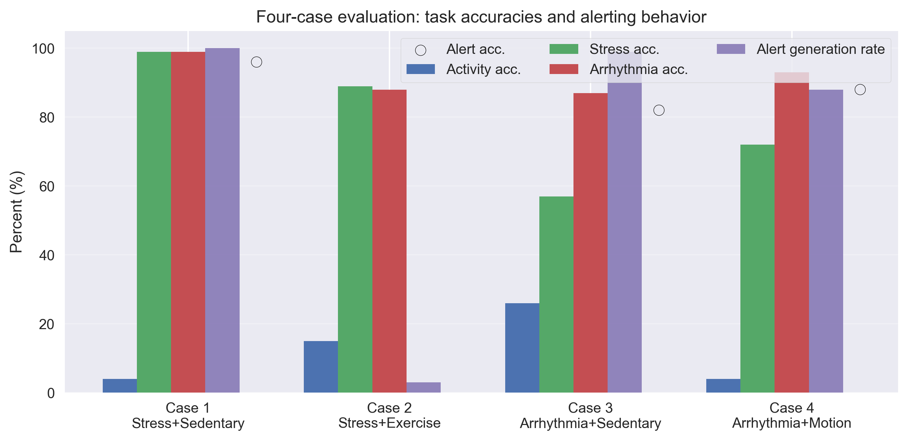
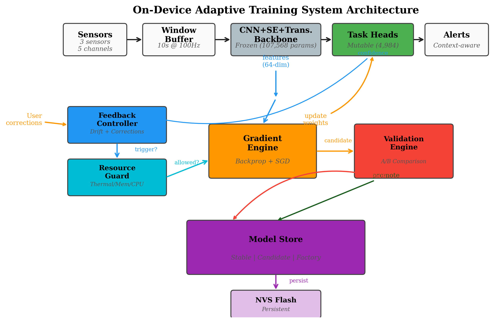

Architecture
A single compact CNN backbone with squeeze-excitation blocks and lightweight task heads processes 10-second windows of 11-channel biosensor data at 100 Hz. At deployment, the Transformer encoder is bypassed, reducing the deployed model to 15,758 parameters (~61.6 KB FP32) while preserving multi-task inference on the microcontroller.

End-to-end pipeline: multimodal sensor input → multi-scale temporal CNN → residual SE blocks → three parallel task heads.

Architecture components: multi-scale temporal convolution, RCB-SE blocks, and improved task-specific MLP heads.

Hardware wiring: AD8232 ECG, MAX30102 PPG, MPU6050 accelerometer, and Grove GSR connected to ESP32-S3 over ADC and I²C.
ESP32 Deployment
The system was built and validated on an ESP32-S3 development board with four wearable sensors. Firmware handles acquisition, filtering, sliding-window buffering, on-device inference, and a motion-aware alert layer that suppresses false stress alerts during exercise.


On-Device Performance
- Deployed parameters: 15,758 (~61.6 KB FP32)
- Inference time: 298 ms / 10 s window
- Duty cycle: 3%
- Power draw: 0.53 W (5.23 V @ 0.1 A)
- Flash footprint: 370 KB sketch
- Heap free: 315 KB · PSRAM free: 8.18 MB
Sensor Stack
- AD8232 — ECG (ADC, ch 0)
- MAX30102 — PPG (I²C 0x57, ch 1)
- MPU6050 — Accelerometer X/Y/Z (I²C 0x68, ch 2–4)
- Grove GSR v1.2 — EDA (ADC, ch 5)
Benchmark Results
Models were evaluated with 5-fold subject-wise cross-validation and on a held-out test set of 13 unseen subjects (3,803 windows). Results below summarize the primary classification and alert-benchmark performance reported in the thesis and ICHI paper.
5-Fold Subject-Wise Cross-Validation
| Task | Accuracy | F1 Macro |
|---|---|---|
| Activity (8-class) | 52.3% ± 1.8% | 31.1% ± 2.0% |
| Stress (4-class) | 69.4% ± 4.2% | 49.9% ± 4.5% |
| Arrhythmia (2-class) | 75.0% ± 6.6% | 74.7% ± 6.4% |
Arrhythmia AUC-ROC: 0.843 ± 0.077 · Sensitivity: 70.3% · Specificity: 80.1%
Held-Out Test Set (13 unseen subjects)
| Task | Samples | Accuracy | Precision | Recall | F1 |
|---|---|---|---|---|---|
| Activity (8-class) | 2,672 | 55.9% | 34.3% | 36.1% | 34.8% |
| Stress (4-class) | 254 | 73.2% | 56.4% | 36.0% | 40.4% |
| Arrhythmia (2-class) | 877 | 72.3% | 62.0% | 59.1% | 59.7% |
Motion-Aware Alert Benchmark
| Scenario | Stress Acc. | Arr. Acc. | Alert Acc. |
|---|---|---|---|
| Stress + Sedentary | 85% | 99% | 85% |
| Stress + Exercise | 82% | 88% | Suppressed (12% false alerts) |
| Arrhythmia + Sedentary | 57% | 94% | 94% |
| Arrhythmia + High Motion | 72% | 95% | 95% |


Documents
Conference paper, symposium poster, and full thesis. The ICHI paper DOI will be added upon publication.
ICHI 2026 Paper (PDF)
CSUNposium Poster (PDF)
M.S. Thesis (CSUN ScholarWorks)
Full thesis: Hardware-Accelerated Deep Learning for Multimodal Biomedical Monitoring with On-Device Adaptive Learning on Resource-Constrained Edge Devices.
Patent Summary · EdgeGuard
Provisional patent application for EdgeGuard — a system for safe on-device neural network adaptation on resource-constrained edge hardware without GPU, cloud connectivity, or external ML frameworks.
Title: Safe On-Device Neural Network Adaptation on Resource-Constrained Edge Hardware Without GPU or Cloud Dependency
- Freezes a CNN+SE+Transformer backbone in read-only memory and adapts only lightweight classification heads on-device.
- Uses feedback-driven backpropagation with zero-allocation, pre-allocated buffers suitable for bare-metal firmware.
- Enforces hardware resource gating on memory, temperature, timing, and CPU load before any training step.
- Maintains dual-slot model versioning with NVS flash persistence, A/B validation, rollback, and safety lockout.
- Implements nine concentric safety mechanisms to prevent on-device adaptation from degrading below baseline accuracy.
- Maps to MCU, SoC, and FPGA targets through a hardware abstraction layer; demonstrated on ESP32-S3 at sub-$10 BOM.
